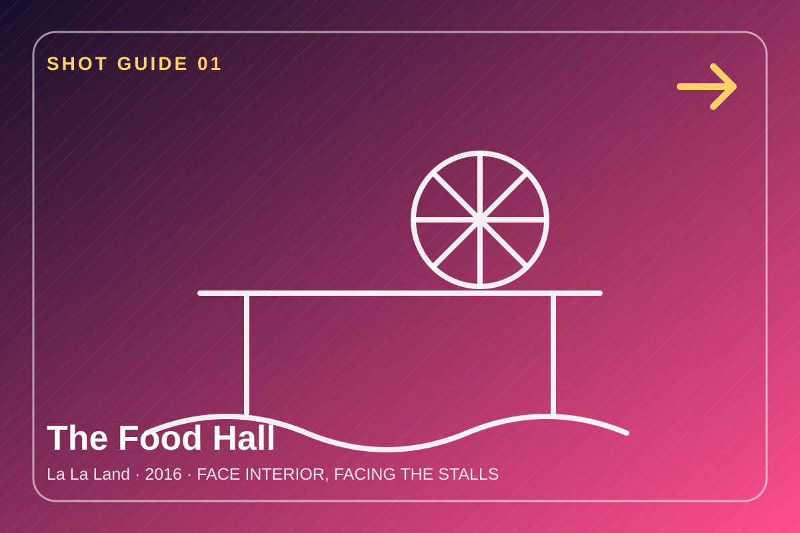
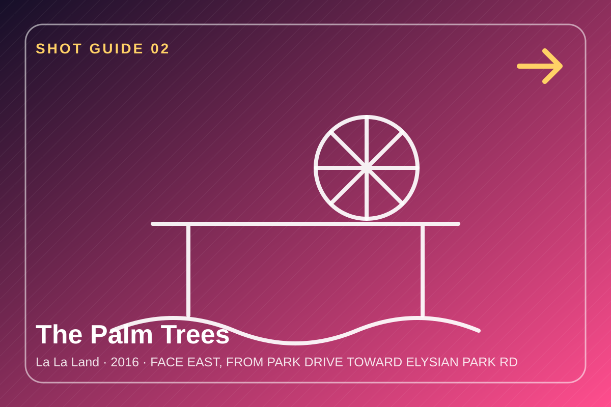
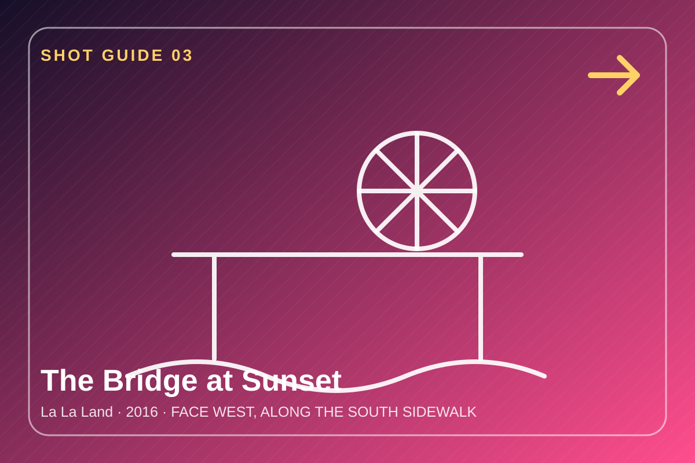
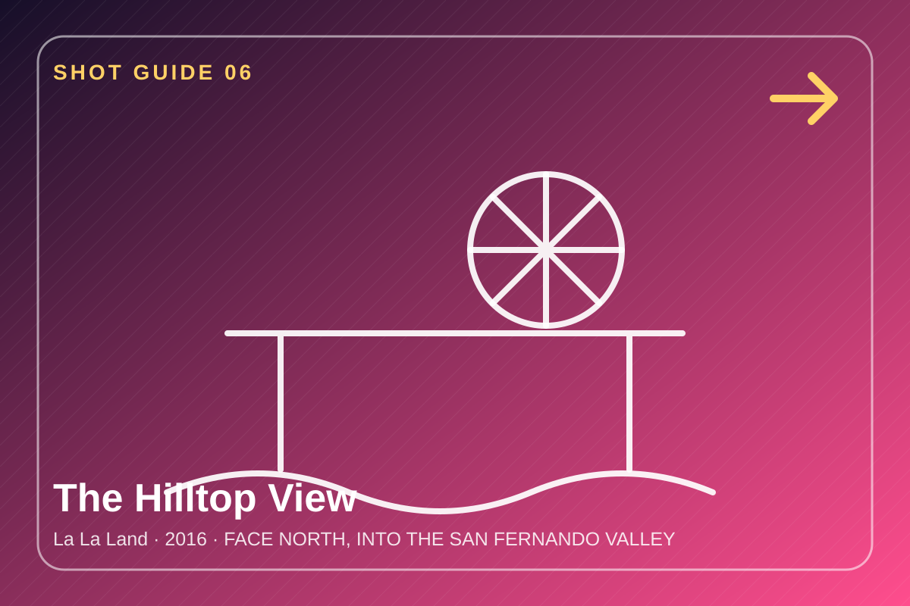

Narrative 01
One-Day Reel Road
A geography-first route grouped by neighbourhood – plan a full day driving through LA.
Plan your driveLive Museum of Movie Locations · Los Angeles
One film. Fifteen real places. Two ways to walk through it.

Curatorial premise
This exhibition treats a single film's filming locations as a distributed museum. None of the on-screen geography is real: the walk home stitches together streets three miles apart, the "hilltop view" is a two-and-a-half-mile hike, and the restaurant's front door and dining room are fifteen miles apart. The visitor studies how editing, props, and camera direction turn scattered real places into one continuous fictional Los Angeles.
Two narratives
Use a practical one-day road route, or the film's own screen order (this project's required chronological narrative, reinterpreted for a single-film collection).
Narrative 01
A geography-first route grouped by neighbourhood – plan a full day driving through LA.
Plan your driveNarrative 02
Follow the film's internal timeline – from the opening freeway number to the closing montage.
Follow the filmOpening stops
The location viewer contains nine reading combinations for each stop: three lengths × three audience/competence modes.




